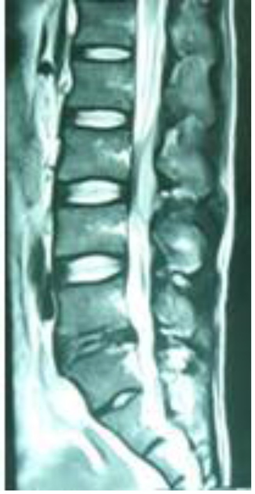
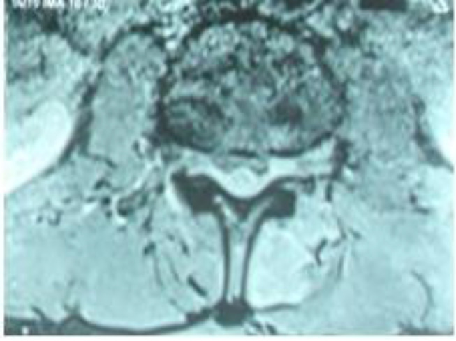
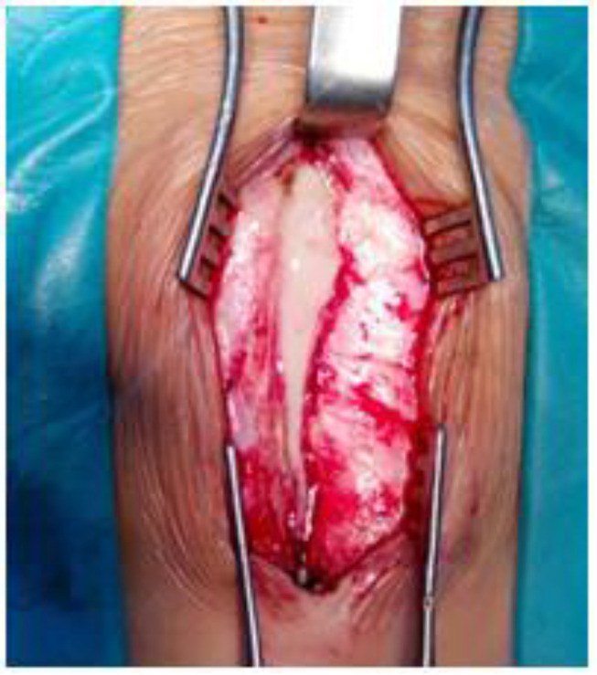
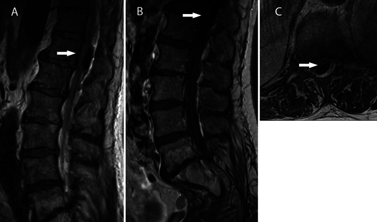
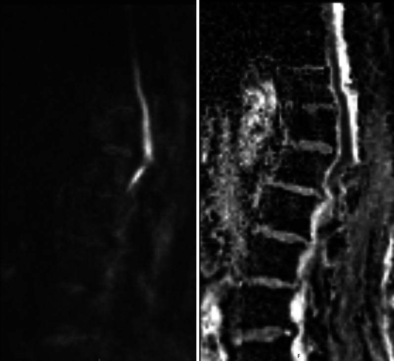

3012 — Áp-xe ngoài màng cứng sau gây tê/gây mê ngoài màng cứng / Spinal epidural abscess after neuraxial anesthesia
Tags: pattern:ap-xe-ngoai-mang-cung pattern:viem-dia-dem pattern:khi-ngoai-mang-cung vung:tuy-song vung:cot-song-that-lung score:ASIA protocol:MRI-tuy-co-gadolinium protocol:DWI
Mức chắc chắn (certainty): tổng hợp y văn (literature synthesis) — ca nguyên văn PMC8128129 (sản phụ 31 tuổi, catheter ngoài màng cứng L3–4 lưu 51 giờ → áp-xe, có 3 ảnh) đặt trong khung số liệu của 2 tổng quan SEA (PMC7595828, PMC7733760) và 1 ca đối chứng khí ngoài màng cứng giả áp-xe (PMC13455440).
Bài này là “đường vào thứ hai” của 258 – Áp-xe ngoài màng cứng do loét tì đè. 258 phủ đường lây liên tục từ ổ loét; bài này phủ đường vào do thủ thuật ngoài màng cứng — ổ nhiễm nằm ngay sau lưng, đau hậu phẫu che lấp, và câu hỏi thực hành khác hẳn: khi nào rút catheter, khi nào chụp MRI, khi nào mổ. Nối tiếp 222 – Viêm đốt sống–đĩa đệm, 250 – Lao nội tủy & lao màng tủy, 228 – Thoát vị đĩa đệm thắt lưng.
1. Tổng quan bệnh học – cơ chế hình ảnh
- Vì sao catheter là cửa vào, không phải “vết chọc vô khuẩn”: đầu catheter đi qua da → mô dưới da → dây chằng → khoảng ngoài màng cứng, mang theo hệ vi khuẩn da (Staphylococcus aureus chiếm > 50%, Gram âm 15–20%). Khoảng ngoài màng cứng không có mạch máu nuôi, chỉ có đám rối tĩnh mạch không van (Batson) và mô mỡ → hàng rào miễn dịch yếu, vi khuẩn bám màng sinh học (biofilm) trên catheter rồi lan theo mô mềm dọc ống sống chứ không khu trú tại lỗ chọc.
- Vì sao thời gian lưu catheter là yếu tố nguy cơ số một: catheter càng lâu, đoạn nằm trong khoang càng dài, biofilm càng dày; lưu > 3 ngày là ngưỡng nguy cơ được nhắc trong y văn, ca PMC8128129 lưu 51 giờ (48 giờ sau mổ + 3 giờ chuyển dạ) và đã đủ gây áp-xe. Yếu tố nguy cơ khác: ung thư, nhiễm khuẩn toàn thân/ổ chọc, suy giảm miễn dịch, đái tháo đường, chấn thương/mổ cột sống trước đó, và quy trình vô khuẩn không đầy đủ (ca này không mặc áo choàng vô khuẩn).
- Tần suất — vì sao vẫn phải nhớ dù rất hiếm:
- Khảo sát Đức 2004: 1/1930 thủ thuật đặt catheter ngoài màng cứng.
- Hoa Kỳ: 0,2–1/10.000 ca/năm, tăng lên 2,5–3/10.000 ca/năm ở các loạt gần đây.
- Sản khoa: 1/255.000 (Moen, Thụy Điển 1990–1999) và 1/506.000 (Tang) sản phụ gây tê vùng — nhưng tử vong 2–20% khi đã hình thành áp-xe, nên “hiếm” không đồng nghĩa “bỏ qua được”.
- Vì sao chẩn đoán muộn là quy luật: đau lưng gặp tới 90% ca SEA, nhưng đau lưng sau sinh/mổ là triệu chứng bình thường; sốt chỉ ~25–50% và ca này 3 ngày đầu hoàn toàn không sốt. Tam chứng kinh điển chỉ 8–15%. Vì vậy mốc thực hành là: đau lưng tăng dần + CRP/PCT tăng + không có ổ nhiễm nào khác → MRI cột sống, không chờ đủ tam chứng.
- TẠI SAO MRI là chuẩn — vật lý của mủ trong khoang ngoài màng cứng:
- T1W: mủ đồng/giảm tín hiệu so với tủy — gần như không thấy.
- T2W: mủ tăng tín hiệu gần bằng dịch não tủy → “hòa” vào CSF, dễ bỏ sót nếu chỉ đọc T2.
- T1W + gadolinium: viền ngấm thuốc dạng vòng quanh ổ không ngấm = áp-xe có vỏ; ngấm lan tỏa không vỏ = phlegmon. Đây là dấu hiệu định vị và quyết định dẫn lưu.
- DWI/ADC: mủ nhớt hạn chế khuếch tán → DWI sáng, ADC tối; giúp tách áp-xe khỏi máu tụ (không hạn chế) và khí (khoảng trống tín hiệu, không hạn chế).
- CT: thấy khí, phá xương, hẹp ống sống nhưng không phân biệt mủ với phù/dịch; X-quang thường bình thường.
- “Khí cũng giả được áp-xe”: ca PMC13455440 — nam 68 tuổi, catheter ngực T11–12, đau dữ dội + liệt hai chi dưới đột ngột trong lúc bơm bolus; MRI có khối sau ngoài màng cứng chèn ép nón tủy, bị đọc là áp-xe và mổ ngay → thực tế là khí ngoài màng cứng (pneumorrhachis) do bọt khí trong cassette bơm. DWI không hạn chế là mấu chốt phân biệt trước mổ.
- Số liệu xét nghiệm dùng để theo dõi: CRP tăng gấp đôi mỗi 8 giờ, đỉnh 36–50 giờ, nửa đời 19 giờ sau khi loại ổ nhiễm → đo lại mỗi 24–48 giờ; CRP > 10 mg/L + ESR > 30 mm/h cho độ nhạy > 95% (không đặc hiệu). Ca PMC8128129: WBC 16,6 G/L, CRP 112,7 mg/L, PCT 0,42 ng/mL, cấy máu S. aureus.

Sản phụ 31 tuổi, catheter ngoài màng cứng L3–4 lưu 51 giờ; MRI 5 ngày sau đặt cho thấy ổ dịch ngoài màng cứng L3–4 (mũi tên) đẩy bao tủy ra trước. Ảnh nguyên bản, không cắt. Nguồn: Nguyen LD et al, Int Med Case Rep J 2021;14:301–305 (PMC8128129), Fig. 1, CC BY-NC 4.0.2. Mẫu hình + chẩn đoán phân biệt theo vị trí (gamut)
- Theo mốc thời gian sau thủ thuật — quyết định gamut trước, chẩn đoán sau:
- < 72 giờ: máu tụ ngoài màng cứng (chọc vào đám rối tĩnh mạch), khí ngoài màng cứng (bơm khí/lọt khí), đau đầu sau chọc màng cứng (PDPH), viêm màng não (nếu chọc thủng màng cứng), đau cơ–cân do tư thế.
- 3–10 ngày: áp-xe ngoài màng cứng (đỉnh ~ngày 3–7), viêm đĩa đệm–đốt sống (nếu catheter đi qua đĩa hoặc lây liên tục), phlegmon ngoài màng cứng, máu tụ bội nhiễm.
- > 2 tuần: viêm xương/đĩa đệm tiến triển, áp-xe mạn, di chứng thần kinh do chèn ép kéo dài.
- Theo tầng đặt catheter — quyết định kiểu thiếu hụt:
- Thắt lưng: hội chứng đuôi ngựa (yếu hai chi, mất cảm giác yên ngựa, bí tiểu, giảm trương lực hậu môn).
- Ngực: chèn ép tủy → mức cảm giác, liệt hai chi, rối loạn cơ tròn; nguy cơ liệt/tử vong cao hơn vì tủy chỉ chịu được vài giờ chèn ép.
- Cổ (hiếm): liệt tứ chi, suy hô hấp.
- Theo hình thái trên MRI — quyết định điều trị:
- Ổ có vỏ (rim-enhancing collection) + hạn chế khuếch tán → áp-xe, chỉ định dẫn lưu khi chèn ép/thiếu hụt thần kinh.
- Phlegmon (ngấm lan tỏa, không vỏ) → có thể kháng sinh đơn thuần nếu không thiếu hụt và theo dõi sát.
- Khí (khoảng trống tín hiệu, không ngấm, không hạn chế khuếch tán) → pneumorrhachis, không phải nhiễm khuẩn; CT xác nhận.
- Máu tụ (giữ hình, tín hiệu theo tuổi máu, không vỏ) → không kháng sinh, xử trí theo chèn ép.
- Gợi nhớ 4 nhóm sau gây tê vùng — “MÁU – MỦ – KHÍ – MÀNG”: MÁU tụ, MỦ (áp-xe/phlegmon), KHÍ (pneumorrhachis), MÀNG não (viêm màng não do chọc thủng). Mỗi nhóm có một câu hỏi chốt riêng: có hạn chế khuếch tán? có vỏ ngấm? có khoảng trống tín hiệu? có cứng gáy/sợ ánh sáng?
- Bẫy vị trí: ổ áp-xe có thể nhảy cách (skip lesion) — ca tiêm chích ma túy tới ~20%; vì vậy MRI toàn bộ cột sống, không chỉ vùng đau.
3. Bảng so sánh phân biệt (ma trận đối chiếu)
| Thực thể (entity) | Hình ảnh/lâm sàng điển hình | Chốt vào (rule-in) | Chốt loại (rule-out) | Gợi ý xác nhận |
|---|---|---|---|---|
| Áp-xe ngoài màng cứng sau catheter (SEA) | Ổ sau ngoài màng cứng, viền ngấm thuốc, DWI sáng/ADC tối; đau lưng tăng dần ngày 3–7, sốt muộn | Viền ngấm + hạn chế khuếch tán + CRP/PCT tăng | Không vỏ, không hạn chế khuếch tán, khởi phát tức thì ngay khi bơm → khí/máu tụ | MRI toàn bộ cột sống có gadolinium + DWI; cấy máu ×2 trước kháng sinh |
| Máu tụ ngoài màng cứng | Khối giữ hình, tín hiệu theo tuổi máu (cấp: T2 tối; bán cấp: T1 sáng), không vỏ; đau đột ngột | Khởi phát tức thì + chống đông/rối loạn đông + không sốt | Vỏ ngấm + DWI sáng + sốt/CRP tăng → áp-xe (hoặc máu tụ bội nhiễm) | INR/tiểu cầu; MRI lặp lại sau 24–48 giờ nếu nghi bội nhiễm |
| Khí ngoài màng cứng (pneumorrhachis) | Khoảng trống tín hiệu trên mọi chuỗi, không ngấm, không hạn chế khuếch tán; liệt xuất hiện trong lúc bơm | CT thấy khí + DWI không hạn chế + bối cảnh bơm bolus | DWI sáng/ADC tối + viền ngấm → mủ, không phải khí | CT cột sống ngay; kiểm tra cassette/bơm |
| Viêm màng não sau chọc màng cứng | Cứng gáy, sợ ánh sáng, sốt; MRI ngấm màng não lan tỏa, không có ổ dịch khu trú | Hội chứng màng não + CSF đục/pleocytosis | Có ổ dịch ngoài màng cứng có vỏ → áp-xe, không chỉ viêm màng não | Chọc dò chỉ khi đã loại trừ áp-xe/khi không có chèn ép; cấy CSF |
| Viêm đĩa đệm–đốt sống | Đĩa T2 tăng, phù tủy xương hai bờ đốt sống, ngấm thuốc; đau kiểu “đau sâu, về đêm” | Phù + ngấm hai bờ đốt sống + hẹp khe đĩa | Đĩa bình thường + ổ dịch ngoài màng cứng riêng → áp-xe đơn thuần | MRI + cấy máu/sinh thiết xương; CT thấy phá xương muộn |
- Ảnh ghép đối chiếu: bài này dùng cặp ảnh đơn cùng chuỗi (không ghép) vì 2 nguồn có giấy phép CC BY-NC và CC BY-NC-ND — ảnh NC-ND không được cắt/ghép, chỉ hiển thị nguyên bản.

Cùng bệnh nhân: axial MRI cho thấy ổ dịch chiếm toàn bộ phần sau ống sống, bao tủy bị đẩy ra trước — mức chèn ép tương ứng với yếu chi 2/5 bên trái, 3/5 bên phải trước mổ. Ảnh nguyên bản. Nguồn: Nguyen LD et al, Int Med Case Rep J 2021;14:301–305 (PMC8128129), Fig. 2, CC BY-NC 4.0.4. Protocol chụp + hệ phân độ/điểm chuẩn hóa
- Ai chụp, chụp khi nào: bất kỳ bệnh nhân đau lưng mới/tăng dần sau đặt catheter ngoài màng cứng, kèm ≥ 1 dấu hiệu: sốt, CRP/PCT tăng, chảy mủ ở chỗ chọc, yếu chi, rối loạn tiểu tiện, mất cảm giác yên ngựa → MRI trong 12–24 giờ, không chờ đủ tam chứng và không chờ hết đau hậu phẫu.
- Protocol MRI tối thiểu: toàn bộ cột sống (cổ–ngực–thắt lưng) sagittal T1W, T2W, STIR/T2 fat-sat, axial T2W qua tầng tổn thương, DWI (b = 800–1000) + ADC, và T1W fat-sat sau gadolinium. Đo chiều dài ổ theo trục dọc (mm), diện tích chèn ép trên axial (mm² hoặc % ống sống), ghi mức chèn ép nón tủy/đuôi ngựa. Ca PMC8128129: ổ L3–4, MRI 5 ngày sau đặt.
- Trước MRI: cấy máu ×2 + cấy dịch/đầu catheter (không hoãn MRI để chờ kết quả); không chọc dò tủy sống khi nghi áp-xe ngoài màng cứng (nguy cơ đưa mủ vào khoảng dưới nhện). Ca này rút catheter ngày 2, chảy mủ tại lỗ chọc ngày 7 — dịch mủ tự thoát ra ngoài là dấu hiệu muộn, không phải điều kiện để chẩn đoán.
- Theo dõi thần kinh: đánh giá ASIA/AIS + sức cơ 0–5 từng nhóm + cảm giác yên ngựa + thể tích tồn lưu bàng quang (PVR) mỗi 2–4 giờ trong 48 giờ đầu sau khi có triệu chứng; PVR > 200 mL là ngưỡng nghi hội chứng đuôi ngựa.
- Ngưỡng rút catheter: rút ngay khi hết chỉ định giảm đau; không giữ catheter qua đêm “cho tiện” sau mổ lấy thai — đây chính là bài học của ca PMC8128129 (giữ 48 giờ sau mổ để giảm đau, trong khi catheter đã có từ chuyển dạ). Nếu nghi nhiễm: rút + cấy đầu catheter, không bơm thêm thuốc qua catheter.
- Điều trị: kháng sinh ≥ 6 tuần (có thể 6 tuần–nhiều tháng; theo CRP và ổ nhiễm), phối hợp vancomycin + cephalosporin/piperacillin–tazobactam theo kinh nghiệm; mổ giải ép + dẫn lưu khi có thiếu hụt thần kinh hoặc chèn ép tủy; cửa sổ hồi phục hẹp: thiếu hụt < 36–72 giờ mới có khả năng hồi phục tốt, mổ sớm (< 12–48 giờ) cải thiện kết cục.
- Phân độ dùng trong bài: ASIA/AIS cho mức tổn thương tủy; Gleave–Macfarlane CES-I/CES-R khi ổ ở thắt lưng gây đuôi ngựa (xem 3013).
flowchart TD
A[Đặt catheter ngoài màng cứng<br/>đau lưng mới hoặc tăng dần] --> B{Có red flag?<br/>sốt, CRP/PCT tăng, mủ chỗ chọc,<br/>yếu chi, bí tiểu, mất cảm giác yên ngựa}
B -->|Không| C[Theo dõi 24–48 giờ<br/>đánh giá lại thần kinh + CRP]
B -->|Có| D[Rút catheter + cấy máu x2<br/>KHÔNG chọc dò tủy sống]
D --> E[MRI toàn bộ cột sống<br/>T1/T2/STIR + DWI/ADC + T1+C]
E --> F{Kết quả}
F -->|Ổ có vỏ + DWI sáng| G[Áp-xe ngoài màng cứng]
F -->|Khoảng trống tín hiệu, DWI không hạn chế| H[Khí ngoài màng cứng<br/>CT xác nhận, không mổ vì mủ]
F -->|Tín hiệu theo tuổi máu, không vỏ| I[Máu tụ ngoài màng cứng<br/>xử trí theo chèn ép]
G --> J{Có thiếu hụt thần kinh<br/>hoặc chèn ép tủy?}
J -->|Có| K[Mổ giải ép + dẫn lưu<br/>trong 12–24 giờ]
J -->|Không| L[Kháng sinh IV ≥ 6 tuần<br/>theo dõi thần kinh 2–4 giờ]
K --> M[Kháng sinh ≥ 6 tuần<br/>CRP mỗi 24–48 giờ]
L --> M
5. Biến thể bình thường và cạm bẫy
- Đau lưng hậu phẫu/hậu sinh là biến thể “bình thường” — nhưng đau tăng dần theo ngày, kèm đau lan theo rễ, hoặc không giảm khi dùng giảm đau thường quy phải coi là bất thường. Ca PMC8128129: đau tăng dần 3 ngày, không sốt → đã bị bỏ qua cho tới khi sốt 39–40 °C ngày 5.
- Không sốt không loại trừ áp-xe: sốt chỉ ~25% (có nguồn tới 50%); ở sản phụ, tăng thân nhiệt do vỡ ối/sinh càng làm mờ dấu hiệu.
- Đau đầu sau chọc màng cứng (PDPH) làm nhiễu: PDPH giảm khi nằm, tăng khi đứng; áp-xe không đổi theo tư thế và kèm dấu hiệu nhiễm trùng. Không dùng PDPH để trấn an khi có bất kỳ dấu thần kinh khu trú.
- Khí ngoài màng cứng giả áp-xe (PMC13455440): khởi phát tức thì trong lúc bơm, MRI có “khối” nhưng DWI không hạn chế; nếu không nghĩ tới, bệnh nhân bị mổ mở ống sống không cần thiết. CT là chốt khi MRI mơ hồ.
- Máu tụ bội nhiễm: khối máu tụ có thể ngấm viền sau vài ngày do viêm → đừng loại trừ áp-xe chỉ vì “tín hiệu giống máu”; so sánh DWI + CRP + cấy.
- Sai sót “thỏa mãn tìm kiếm” (satisfaction of search): đã thấy viêm đĩa đệm hoặc thoát vị đĩa đệm thì vẫn phải dò toàn bộ khoang ngoài màng cứng — ổ áp-xe có thể nằm cách xa tầng đĩa bệnh lý.
- Ảnh giả do kim/catheter: đường tín hiệu thẳng, mảnh, xuyên qua mô mềm → đừng đọc là “dò mủ”; đối chiếu lát cắt liền kề và ảnh không có kim.
6. Tự lượng giá — Blind Quiz
Ca 1 — Sản phụ 31 tuổi, sinh mổ dưới gây tê ngoài màng cứng, ngày 5 đau lưng tăng dần + sốt 39–40 °C. Nhìn ảnh trước, mô tả trước.
- Gợi ý lâm sàng: catheter L3–4 lưu 51 giờ; 3 ngày đầu không sốt, chỉ đau lưng; ngày 7 chảy mủ ở lỗ chọc, yếu chi dưới.
- Câu hỏi: Ổ dịch nằm khoang nào, tầng nào? Nêu 3 chẩn đoán phân biệt và một dấu hiệu trên MRI giúp chốt. Bước tiếp theo trước khi cho kháng sinh là gì?
Bấm để hiện đáp án (findings + chẩn đoán)
- Dấu hiệu: ổ dịch sau ngoài màng cứng L3–4, đẩy bao tủy ra trước (mũi tên); axial cho thấy ổ chiếm gần toàn bộ phần sau ống sống.
- Chẩn đoán: áp-xe ngoài màng cứng sau catheter ngoài màng cứng, S. aureus — mủ nhớt hạn chế khuếch tán (DWI sáng/ADC tối) và có viền ngấm thuốc; đau lưng 90%, sốt muộn.
- Phân biệt: máu tụ (khởi phát tức thì, tín hiệu theo tuổi máu, không vỏ), khí ngoài màng cứng (khoảng trống tín hiệu, không hạn chế khuếch tán), viêm màng não (hội chứng màng não, không ổ khu trú).
- Việc phải làm trước kháng sinh: cấy máu ×2 + cấy đầu catheter; không chọc dò tủy sống; MRI toàn bộ cột sống (ổ nhảy cách ~20%).

- Trong mổ: mủ đặc ngoài màng cứng được lấy bỏ + rửa khoang; xác nhận chẩn đoán bằng cấy mủ (S. aureus, trùng cấy máu).
- Nguồn: Nguyen LD et al, Int Med Case Rep J 2021;14:301–305 (PMC8128129), Fig. 1–3, CC BY-NC 4.0.
Ca 2 — Nam 68 tuổi, catheter ngoài màng cứng NGỰC, liệt hai chi dưới đột ngột ngay trong lúc bơm bolus.

- Câu hỏi: Vì sao “khối” này không phải áp-xe dù chèn ép nón tủy? Chuỗi xung nào chốt?
Bấm để hiện đáp án (findings + chẩn đoán)

- Dấu hiệu: khoảng trống tín hiệu trong khối sau ngoài màng cứng T11–12 (khí), chèn ép nón tủy; DWI (b = 800) không có ổ sáng, ADC không tối → không phải mủ.
- Chẩn đoán: pneumorrhachis ngoài màng cứng do khí trong cassette bơm (bộ phát hiện bọt khí bị tắt). Mổ giải ép cho hồi phục nhanh, nhưng chẩn đoán đúng trước mổ nhờ CT/DWI.
- Bài học: khởi phát tức thì trong lúc bơm + DWI không hạn chế + CT thấy khí = không phải áp-xe; đừng để “MRI có khối” dẫn thẳng tới mổ vì mủ.
- Nguồn: Sommernes JH et al, J Neurosurg Case Lessons 2026;12(6):CASE26351 (PMC13455440), Fig. 1–2, CC BY-NC-ND 4.0 (ảnh nguyên bản, không cắt/ghép).
Ca 3 — Cùng bệnh nhân Ca 1: ảnh axial trước mổ.
- Câu hỏi: Mức chèn ép tương ứng với thang sức cơ nào? Khi nào phải mổ thay vì tiếp tục kháng sinh?
Bấm để hiện đáp án (findings + chẩn đoán)
- Dấu hiệu: ổ dịch chiếm toàn bộ phần sau ống sống, bao tủy đẩy ra trước; tương ứng yếu 2/5 trái, 3/5 phải, giảm phản xạ gân.
- Ngưỡng mổ: có thiếu hụt thần kinh hoặc chèn ép tủy → giải ép + dẫn lưu; cửa sổ hồi phục < 36–72 giờ, mổ sớm (< 12–48 giờ) tốt hơn. Kháng sinh đơn thuần chỉ khi không thiếu hụt và ổ nhỏ, theo dõi sát.
- Sau mổ: kháng sinh ≥ 6 tuần, CRP mỗi 24–48 giờ; ca này hồi phục hoàn toàn sau 5 ngày.
- Nguồn: Nguyen LD et al, Int Med Case Rep J 2021;14:301–305 (PMC8128129), Fig. 2–3, CC BY-NC 4.0.
Bài liên quan chéo
- 258 – Áp-xe ngoài màng cứng do loét tì đè cùng cụt — đường lây liên tục, cùng khung MRI/DWI
- 3013 – Hội chứng đuôi ngựa sau mổ cột sống — phân biệt tụ máu–phù–áp-xe–thoát vị tái phát
- 222 – Viêm đốt sống–đĩa đệm
- 228 – Thoát vị đĩa đệm thắt lưng & Pfirrmann/Modic
- 250 – Lao nội tủy & lao màng tủy
- 220 – Ống sống tủy: giải phẫu cắt lớp
Ảnh
- 5 ảnh, tải từ Europe PMC/PMC, giấy phép từng file trong
images/CREDITS.md: PMC8128129 (CC BY-NC 4.0, 3 ảnh) và PMC13455440 (CC BY-NC-ND 4.0, 2 ảnh — hiển thị nguyên bản, không cắt/ghép). - Không dùng ảnh từ nguồn không rõ giấy phép; không có ảnh nào bị crop/kéo giãn.
Không dùng để chẩn đoán độc lập khi chưa có người hướng dẫn.